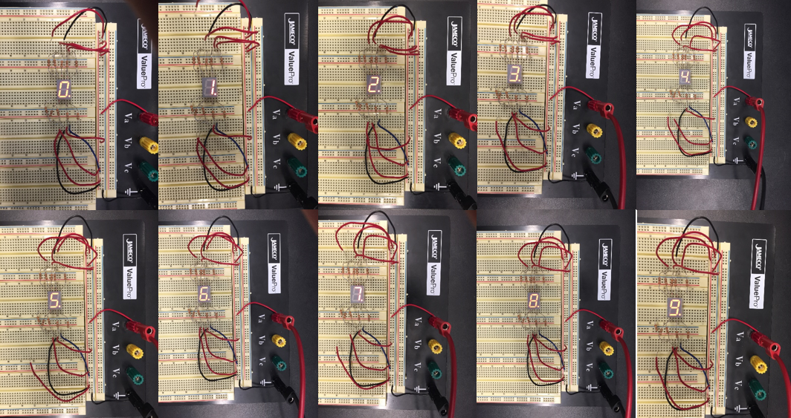
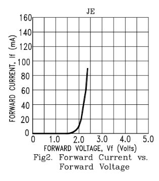
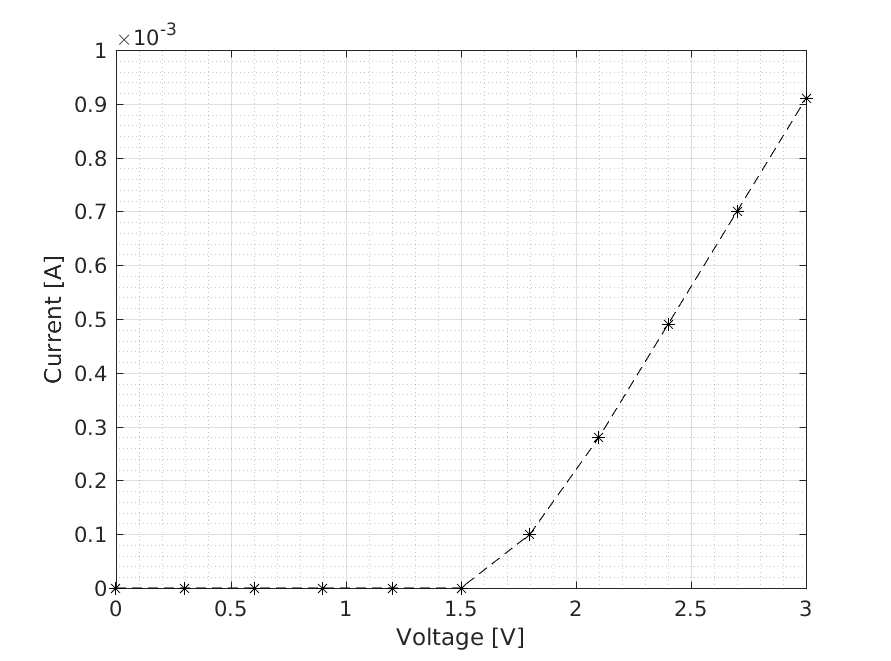

Figure 1: Displays attained by controlling 7 inputs to the display chip is shown above.
Each diode requires a certain amount of
voltage before segments become visible. This relationship can be
understood with a current and voltage relationship. Below is the
manufacturer forward IV characteristics for the chip used.

Figure 2: The manufacturer specifications for current versus voltage is shown above.
The IV characteristics for one diode
within the chip was measured by altering the voltage across the chip
and measuring the current. The experimental results differed from the
manufacturer specifications. One possible reason for this discrepancy
where the resistors used. The manufacturer most likely did not use a
resistor in series to measure IV characteristics. The figure below was
attained by altering the voltage across a diode from 0V to 3V by
increments of 0.3V.

Figure 3: The experimentally attained IV characteristics of a diode is shown above.
The number of pins that need to be controlled can be decreased by using a decoder (
M74HC4543).
The previous displays were attained by changing 7 pins from high to low
and vice versa. With a decoder, the same number of displays can be
attained by altering the connection of pins A-D of the decoder.